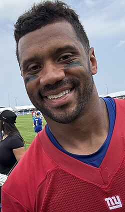
Two weeks in… and Russ is back! (or maybe he just played against the Cowgirls) Let’s see how it goes against the (oh and twwooo) Cheeks.
Matchup of the Week
Barbecue Gibbs (0-2) vs. Cook-n Lamb for my Nabers (2-0) CJ and PJ have their annual PF bet and face off in a crucial matchup for Chris. 3-0 has a great shot at making the playoffs, 0-3 is basically a death sentance. To boot, they sport the top PF projectsions for the week.
Cook’s got PJ in the lead after a strong TNF, but will it come down to Gibbs on MNF against the Ravens, who have been a good matchup for RBs so far.
What to watch: * Chris outbid PJ for Olave, who’s inserted straight into the lineup against a stingy Seattle D. * Lamb is Lamb and is a bottle rocket, but he’s also facing the soft-so-far CHI D.
Lamar, Andy’s moniker from years past, faces off against Jeanty’s slow start and other so-sos. \
Waiver Wire Spice 🌶️ * 15 moves on Wednesday, let’s go! * Andy picks up the #1 TE in Kraft at $17, but he picks up an injury designation later in the week. * Andy also picks up Rhamondre with a $21 bid, to no other bidders. Similarly picks up Skattebo, who looks pretty strong after week 2, but cost Andy $13 (again with no other bidders) * Thursday - CJ outbids PJ for Olave at $7, to PJ’s $6 * Pangy picks up Jennings to hold the entire SF WR room (Pearsal and Ayuik in tow)
Ahh, for this week, let’s play my least favorite fucking corporate bullshit icebreaker - two truths and a lie… you decide what the lie is!
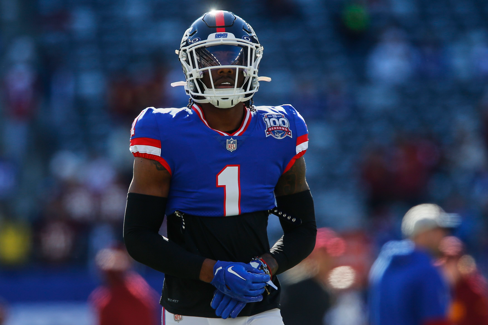
1. PJ (2-0, PF: 272)
- Nabers is better than Ja’Marr Chase, and completely hampered by his QBs.
- Keenan Allen was the best pick of our draft, with the late round snipe.
- James Cook’s impressive TD total from last season was no fluke.
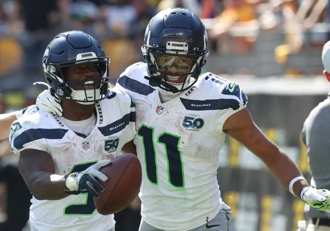
2. Kris (2-0, PF: 250)
- Kris’ reach for JSN was completely warranted.
- Dak, leading the potent Dallas O, is a top 5 fantasy QB.
- Jonathan Taylor deserves respect on his name… remember when he was the consensus #1 pick? That ain’t old news.
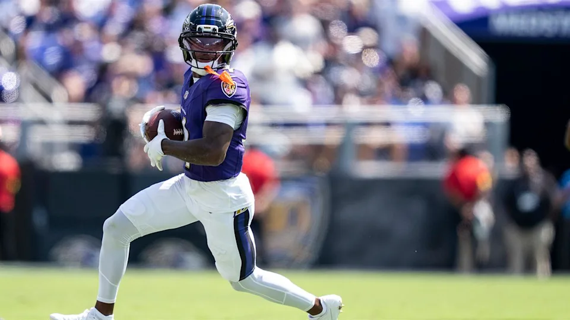
3. Matt (1-1, PF: 238)
- Zay Flowers is a new WR1 to consider for years to come.
- Lamar is his best friend… but seriously, he’s Matt’s best friend.
- Deebo isn’t fat, he’s just thicc.
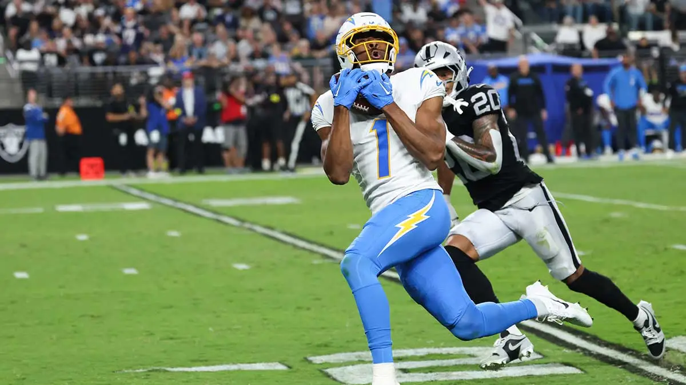
4. Andy (2-0, PF: 130)
- Jeanty is a bust (lol, repeating weeks here!)
- Nacua is unstoppable and is definitely going to stay healthy all year.
- QJ IS HIM.
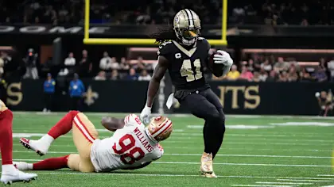
5. Tony (1-1, PF: 228)
- McConkey is the third best receiver on the Chargers.
- Ja’Marr will be just fine without Burrow.
- Kamara will be a top-flight RB far into his 40’s, regardless of whatever shitty QB the Saints have.
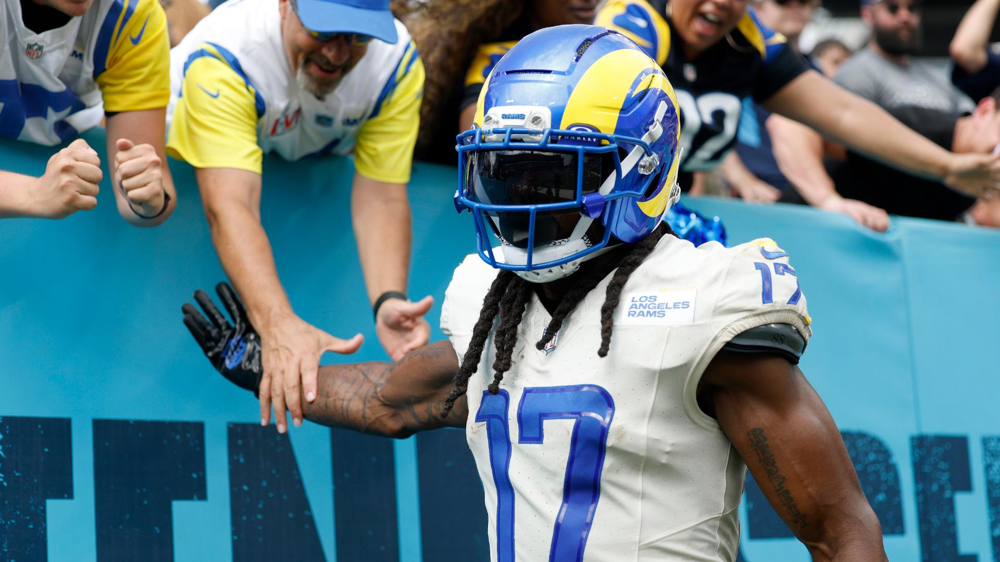
6. Joel (1-1, PF: 235)
- The Olave drop will be the best move Joel makes this year.
- Achane will never catch a pass beyond the line of scrimmage for the rest of the year, but will still be an elite RB1.
- Stafford will keep two receivers, including Devante, in the WR1 conversation all year.
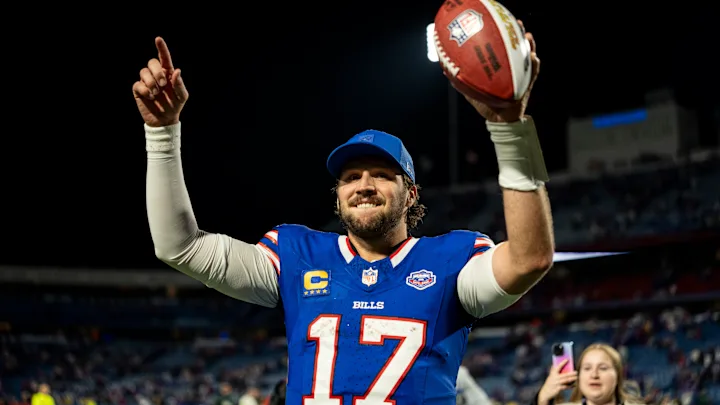
7. Pangy (1-1, PF 223)
- Josh Allen has a new, even bigger hog. No notes on the nose.
- Rome Odenze will elevate himself into the top-10 WR conversation before the year ends, despite the Bears misery.
- PITTS IS FUCKING BACK!
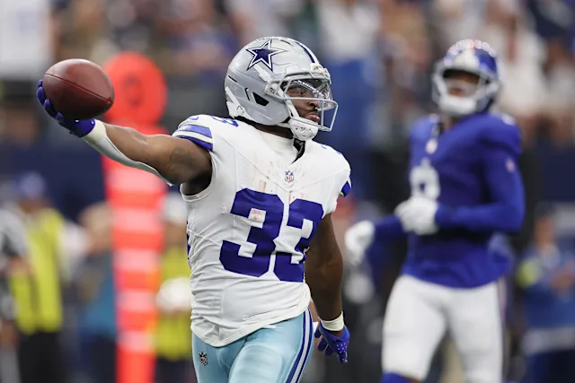
8. Jake (1-1, PF: 199)
- Javonte Williams is a RB1.
- Hurts run as an elite QB is over and the Eagles are fucking washed.
- I won’t score 100 all year long.
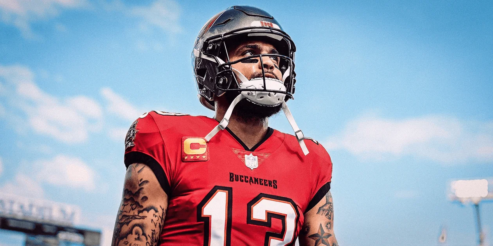
9. CJ (0-2, PF: 208)
- Chris will lose every game this year, due to a very mid roster.
- Time has finally caught up to the everlasting Kelce and Evans.
- Aubrey will win CJ four games on his own this year, just like the Cowboys.
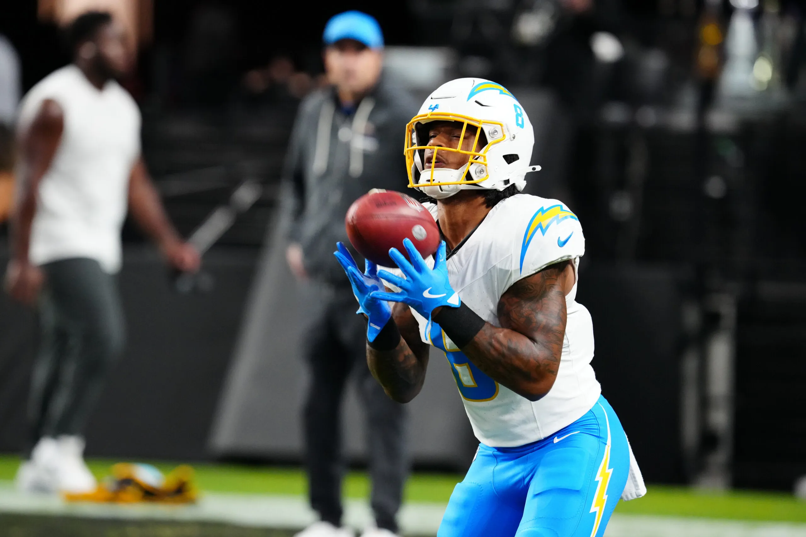
10. Neil (0-1, PF: 179)
- Omarion Hampton will finish the season as the RB2 on the Chargers.
- Justin Jefferson’s juice won’t be enough to get him past McCarthy and Wentz, or whoever the fuck the Vikings start this year.
- The Packers juggernaut movement won’t be enough to translate to success via Love and Jacobs for Neil to recover and make the playoffs.
Good luck to everyone besides ANDY - Jake 💋
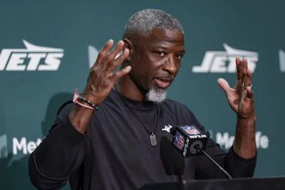
“Apparently I didn’t get them ready to play. … It’s not OK to lose like that.”
- Aaron Glenn
Glenn appears in our quotes again for the second week in a row. Very relatable… again. I gotta get my guys ready for week three, LFG!